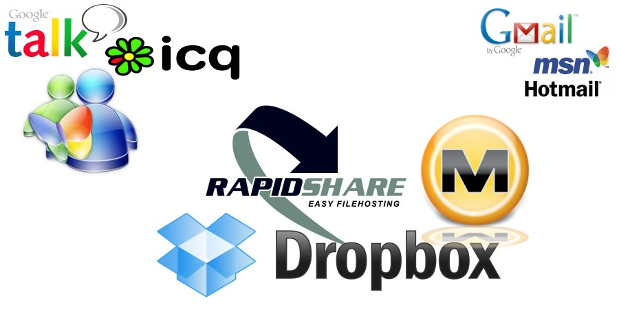

ReInventing the Internet?
Overview of the Talk
- Attack Vectors against Servers & VMs
- How Much Privacy Is Enough?
- Social Onion Routing
- More Desired Features
- Architecture, Protocols
- How to Beat Faceboogle
- The 'Secure Share' App
About carlo von lynX
Why am I talking here?
- 20 years of messaging & chat protocol design
- /me etc.
- PSYC: federated & multicasting
- then Jabber came
- PSYC good for business, open source delayed
- back then, servers were reliable
Don't Trust Servers
Hardware Servers are vulnerable
- client/server architecture: data resides on servers
- federation: data visible on even more servers
- memory access via bus sniffing
- no shutdown necessary
- automated memory image analysis proven
- eat-inside or take-away
Don't Trust Virtual Machines
Commodity Servers are VMs
- vulnerable cryptography
- memory can be monitored
- controlling system accessible by observers
- automated monitoring of federated social networks
- anti-terror legislation possible
- even if your server is at home
Privacy vs. Paranoia
How Much Privacy Is Enough? 1/2
- just to the intended recipients (e2e encryption)
- packet size padding (unobservability)
- flexible number of anonymization hops
- optional intentional delay
Privacy vs. Paranoia
How Much Privacy Is Enough? 2/2
- forward secrecy
- deniability (a log is no proof of nothing)
- private subscription lists (not on a server)
- robust and resilient against attacks
It's A Question Of Trust
Social Onion Routing
- trust relationship between nodes
- multihop provides anonymization
- motivation to provide "servers" as fast routers
- my server is me, so you can trust my server
- "P2P" a lot faster over servers
- servers agnostically maintain messages (and data)
Portability & Acceptance
Lightweight Daemon
- personal devices and home routers
- lightweight for embedded and mobile
- lightweight for background daemon use
- compiled language
- more likely to get included in OS distros
Architecture
Technology
- "Enhanced" P2P with servers as agnostic routers
- GNUnet as a framework: privacy, VPN, meshnet
- TUM, learned from I2P, Freenet...
- social graph discovery instead of DHT
- no file sharing, no big traffic
- PSYC on top
PSYC vs XML and JSON
- extensible: semantically rich
- binary/encrypted data capable
- efficient as a binary format
- table shows parsing speed in milliseconds:
| libpsyc regular | libpsyc compact | json-c | json-glib | libxml sax | libxml | rapidxml | |
|---|---|---|---|---|---|---|---|
| presence | 236 | 122 | 2463 | 10016 | 4997 | 7557 | 1719 |
| chat msg | 295 | 258 | 2147 | 9526 | 5911 | 8999 | 1850 |
| activity | 353 | 279 | 4666 | 16327 | 13357 | 28858 | 4356 |
One Too Many
Multicasting for Scalability
- social = one-to-many | many-to-many
- round robin distribution = slow (SMTP)
- HTTP is one-to-one, query/response
- IP Multicast fails (router table overflow)
- IRC and NNTP do/did multicast, but have other problems
- XMPP has a trust issue (says the XSF)
Flexibility
Framework Architecture
- a truly private communications backend
- social applications to be built on top
- emulations of the 'open standards' possible
- OStatus, WebID, RDF, even the Twitter API
- optional modules for XMPP, IRC available
- Activity Streams
Dissemination
Hard to beat Faceboogle
- since we need to go onto every computer anyway..
- offer something Faceboogle can't provide?
- exchanging files between friends sucks
- USB sticks, e-mail, file hosters, skype, MSN, DropBox (brrr!)
- WTF is 'Secure Share' ?
Desktop Integration
'Secure Share' Function
- right mouse button click (context menu)
- share a file to a channel of subscribers
- appears in their file system soon
- realtime or delayed notification
- no permission dialogs
- shipped by default in your free OS?
Secure Share Feature Set
Features of Prototype Edition
- Messaging, Subscriptions, Status Update
- File Exchange, VPN, Software Distribution
Later Features
- Group Communications, Social Network Features
- Media Support: Photo Albums, Videos, Music
- Extension API for Custom Social Apps
- Realtime Streaming
Secure Share
Who's involved?
- Carlo v. Loesch (secushare.org)
- Gabor Toth (secushare.org)
- Mathias Baumann (PSYC)
- Daniel Reusche (Social Swarm)
If you like what we do
We need support

- Manpower
- Alliances
- Finances
- Publicity
Check by: secushare.org
Thank you.
A bad idea whose time has come?
End-to-end Encryption in the Browser!!1!11
- User interface comes from the server.
- Web browser does what the server says.
- Server corrupted? It can steal your data.
- Only static install helps. Still:
- Bad cryptography, bad script signing.
- So you might aswell go for the real thing...
One Too Many (XMPP)
Multicasting with XMPP?
- 70% of S2S XMPP messages is presence updates (5 years ago)
- XMPP has limited support for one-to-many communications
- XMPP can be improved, but: trust problem with multicast
One Too Many (HTTP)
Multicasting with HTTP?
- fundamentally feasible
- unnatural: HTTP is not bidirectional
- requires trust in a federated architecture
Cross That Bridge As We Get There?
Let's just get started with something!
- The Mediocre is the Enemy of the Good
- Historic Examples:
- HTTP.. HTTP/NG?, SPDY!?
- SMTP.. What? Faceboogle!?
- XML.. What? JSON!?